The Elevated Optic Disc
- Protrusion of the optic disc above the surface of the retina
- Common causes: congenitally elevated optic disc anomalies, papilledema, optic neuritis, ischemic optic neuropathy
- Uncommon causes: Leber hereditary optic neuropathy, infiltrative optic neuropathy from meningeal cancer, pilocytic astrocytoma (“optic glioma”), hypertensive optic disc edema, central retinal vein occlusion, toxic optic neuropathy
- Optic disc surface is not flush with the surface of the adjacent retina
- Elevation may be congenital or acquired
-
Congenital optic disc elevation has these features
- Physiologic cup is usually absent
- Peripapillary retinal nerve fiber layer appears distinct
- Optic disc vasculature is anomalous
-
Extruded mitochondria visible as white flakes (“drusen”) within the optic disc may be present
- Sometimes easily visible on the optic disc surface
- Often partially or completely buried within disc substance and better detected with autofluorescence fundus photography CT, ultrasound, or optical coherence tomography
-
Tip: most congenitally elevated optic discs do not contain drusen
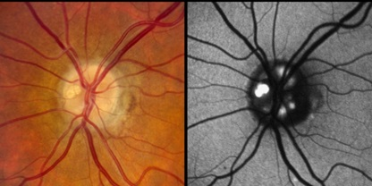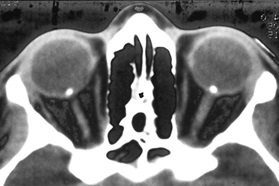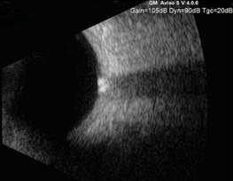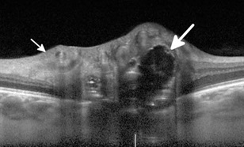
-
Acquired optic disc elevation has these features
- Physiologic cup is usually preserved with an indistinct peripapillary retinal nerve fiber layer
- Optic disc surface hemorrhages or cotton wool spots are often present in severe and acute cases
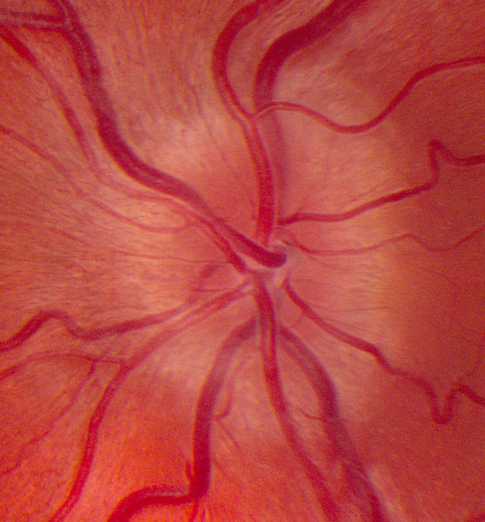
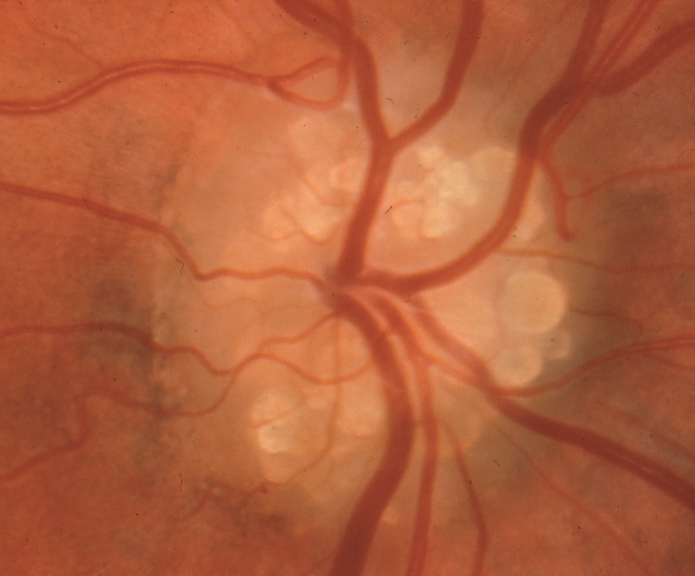
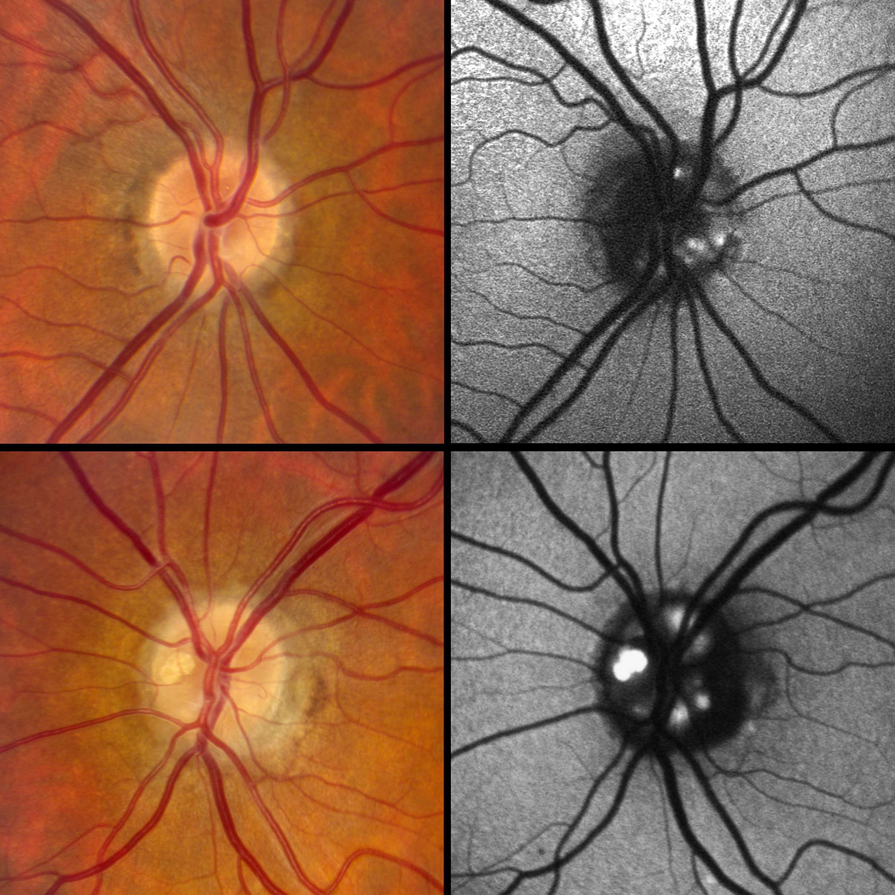
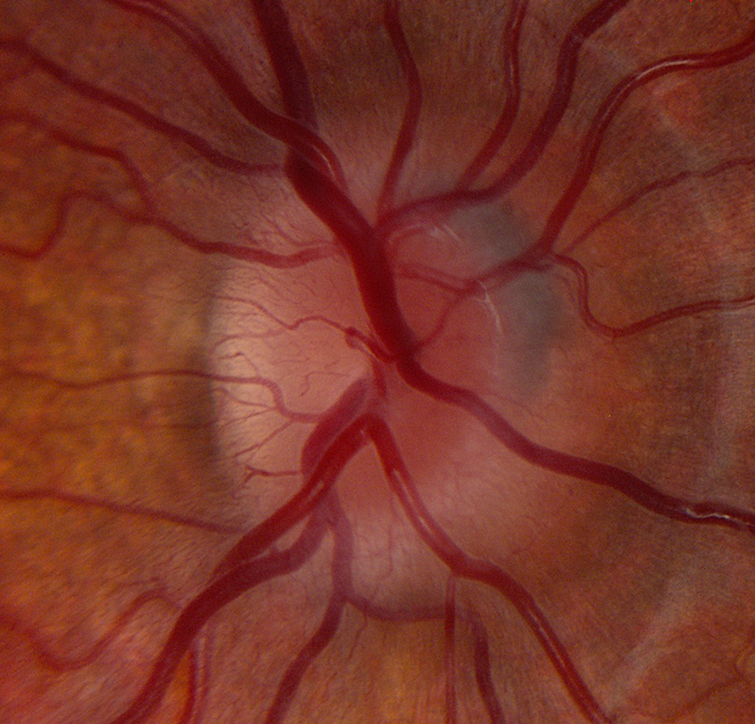

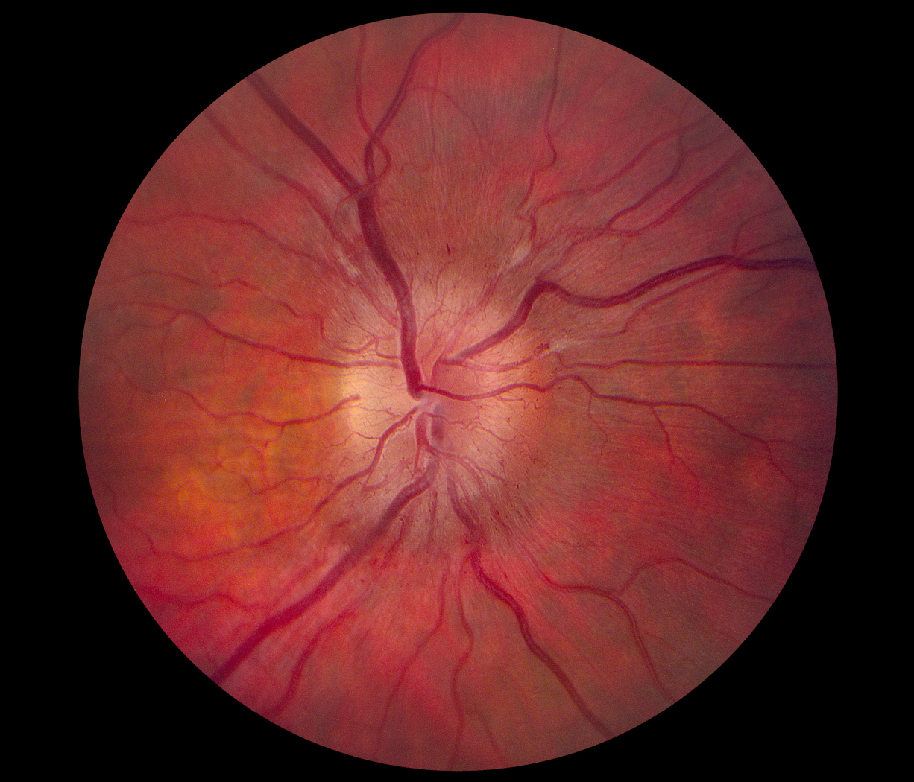
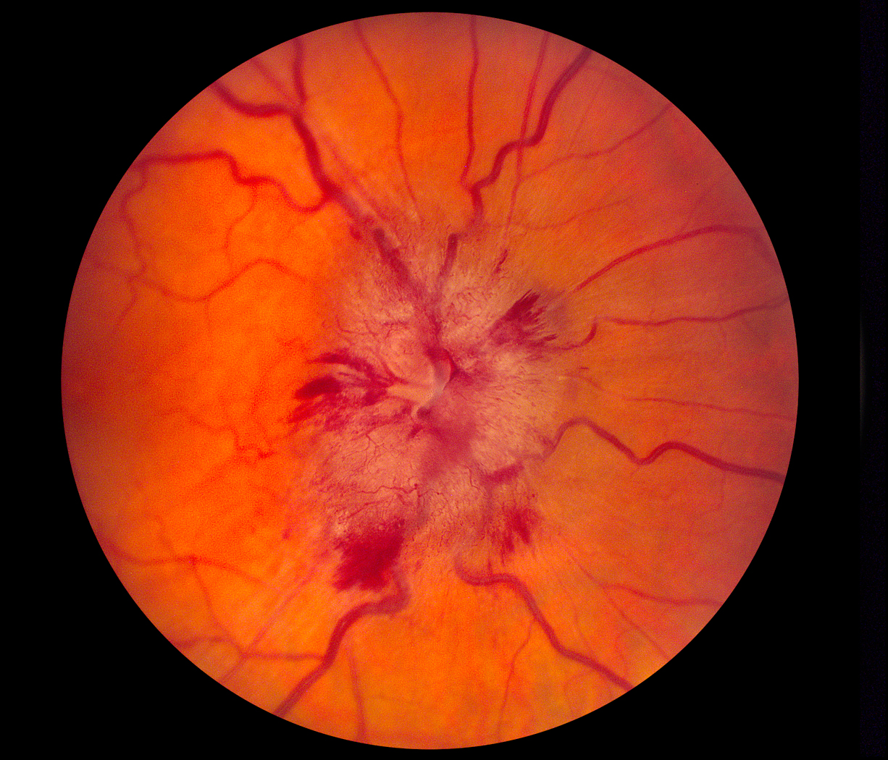

- Distinguish congenital from acquired optic disc elevation
-
Trap: ophthalmoscopy may not be reliable in this task
-
Tip: optical coherence tomography, ultrasound, autofluorescence photography, and orbit CT are useful in disclosing buried drusen
-
Tip: ancillary imaging is not yet reliable in distinguishing papilledema from other causes of acquired optic disc
-
If you have excluded congenital optic disc elevation, use these clues to determine the cause of acquired optic disc elevation
- Symmetrical elevation in the two eyes and absence of major visual dysfunction suggests papilledema
- Segmental elevation of the optic disc suggests non-arteritic infarction
- Pallid elevation suggests arteritic infarction
-
Tip: in the absence of these distinctive signs, use non-ophthalmoscopic information to diagnose the cause of acquired optic disc elevation
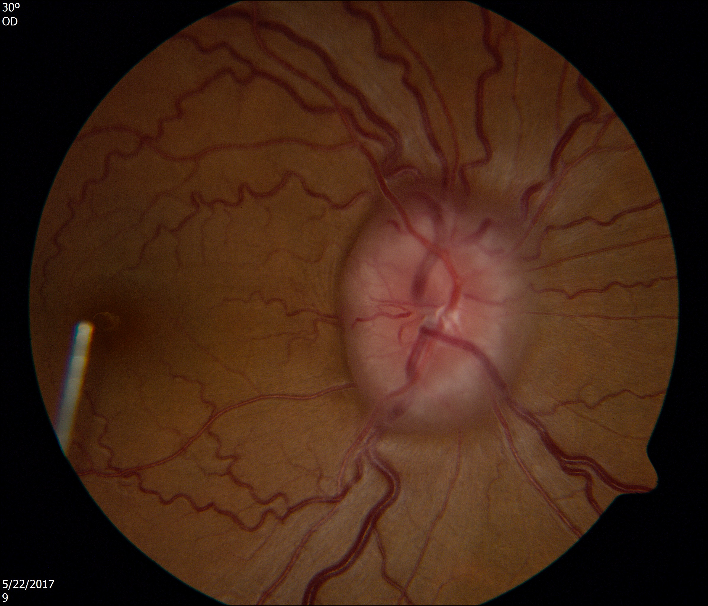
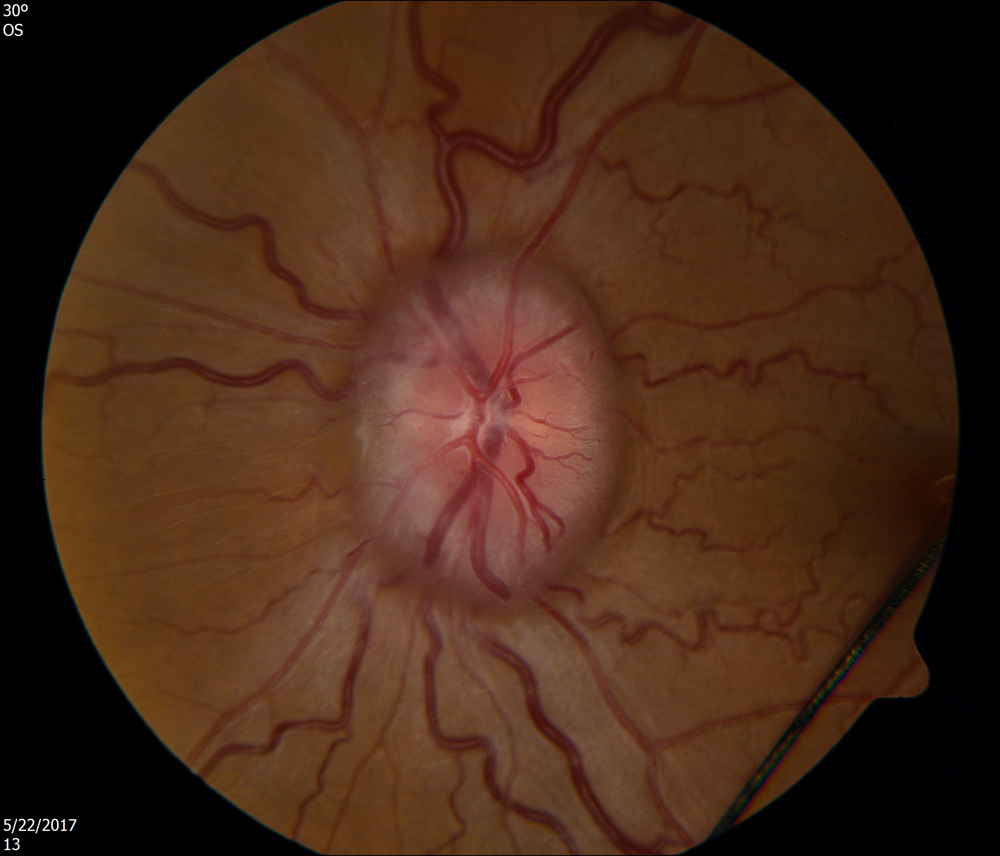
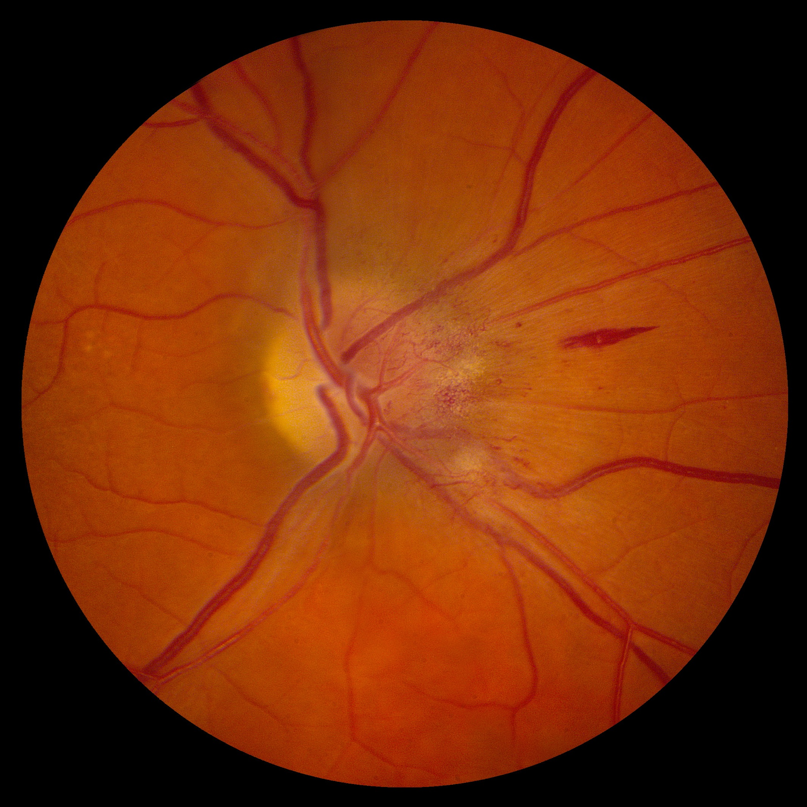
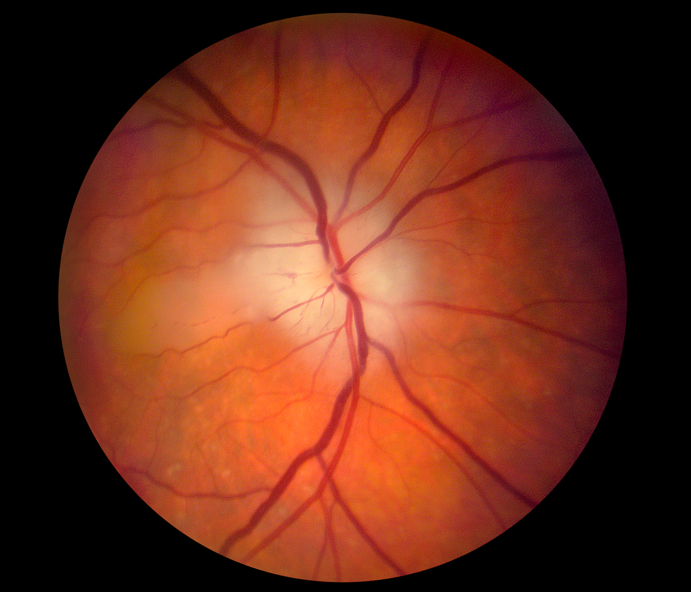
- Failure to distinguish congenital from acquired optic disc elevation leads to improper management
- Failure to distinguish one cause of acquired optic disc elevation from another leads to improper management
-
Tip: papilledema and optic disc infarction from giant cell arteritis are the two causes of acquired optic disc elevation that require most urgent management